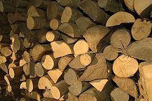
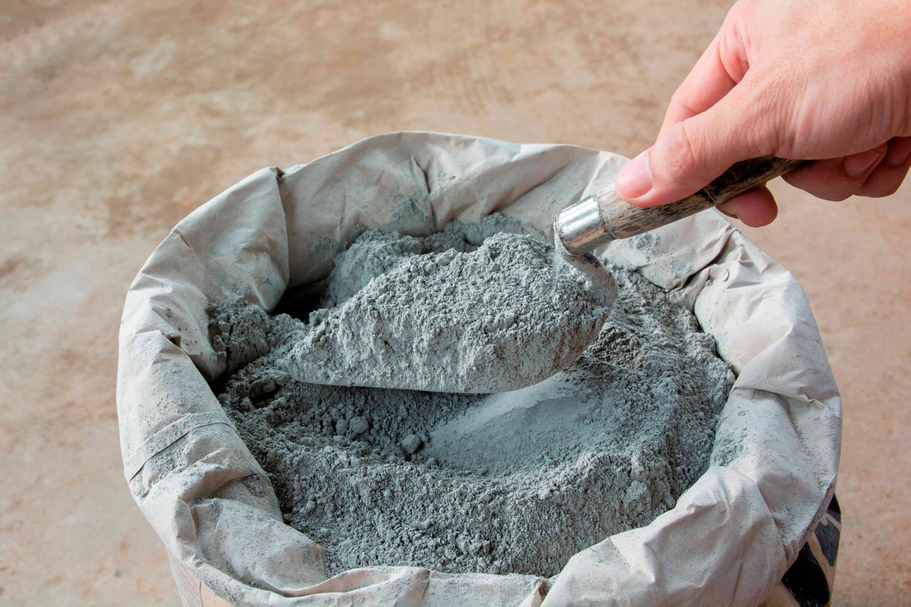

Madera
Es un material ortótropo encontrado como principal contenido del tronco de un árbol. Los árboles se caracterizan por tener troncos que crecen cada año y que están compuestos por fibras de celulosa unidas con lignina.

Cemento
El cemento es un polvo fino y suave que se utiliza como conglomerante debido a que se endurece después de estar en contacto con el agua. Se produce a partir de una mezcla de caliza y arcilla, calcinadas y posteriormente molidas.

ACERCA DE NOSOTROS
Cada obra es una historia de dedicación y esfuerzo. Nuestros profesionales
son el corazón de cada proyecto, llevando a cabo cada tarea con pasión y precisión.
Detrás de cada martillazo, cada medición, hay un equipo comprometido con la
excelencia. ¡Estamos construyendo sueños!